Fracture networks in geothermal energy + lithium co-production
Simulation study: mixed-dimensional flow/transport/heat in fractured porous media
Reference: Banshoya, Berre, Keilegavlen (2025), Geothermal Energy.
Date: 15 January 2026.
Course: Numerical methods for the geoscience.
Tip: press S for speaker notes if enabled.
Visual context I: lithium demand outlook (example figure)

Example demand/supply-style chart.
Key takeaways:
- Demand growth is steep across most scenarios.
- Supply expansion must be fast and diversified.
- Geothermal brines become a strategic add-on.
What is geothermal energy?
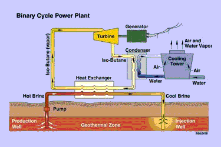
Heat exchanger.
- Heat stored in the subsurface is brought up by circulating fluids.
- Produced hot brine drives power/heat generation at the surface.
- Cooled fluid is re-injected to sustain pressure and heat extraction.
How geothermal lithium co-production works

Source: EuroGeologists (2017).
Lithium‑rich regions where co‑production is promising:
- Upper Rhine Graben, France (Soultz-sous-Forets).
- Salton Sea geothermal field, USA (California).
- Andean Altiplano, Chile/Argentina/Bolivia.
- Qinghai-Tibet Plateau, China.
- Great Rift Valley, East Africa (Kenya, Ethiopia).
Lithium extraction pathways
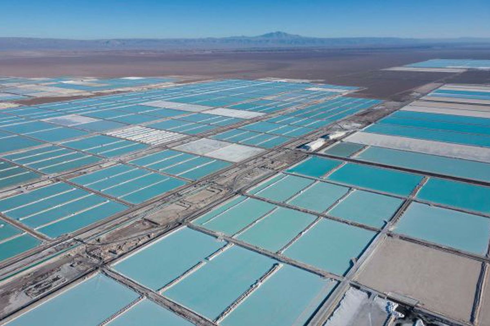
Brine evaporation ponds.
- Low process energy, very slow (months–years).
- Large land + water footprint, climate-dependent.
Hard-rock mining + refining.
- Faster supply, high energy intensity.
- Tailings, CO₂, and transport impacts.
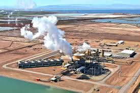
Direct lithium extraction (DLE).
- Sorbents/solvents/membranes target Li.
- Smaller footprint; fits geothermal brines.
- Compatible with hot brines and reinjection loops.
- Potentially faster recovery than evaporation.
Breakthrough: the core operational risk
- Chemical breakthrough: Li-depleted injected fluid reaches the producer.
- Thermal breakthrough: cold injected fluid reduces produced temperature.
- Heat conduction buffers temperature, so Li decline usually starts earlier.
Assumption: negligible Li leaching from rock.
Chemical breakthrough often precedes thermal breakthrough.
Modeling strategy
- Single-phase incompressible flow (Darcy) + mass conservation.
- Transport of lithium concentration by advection (dispersion neglected).
- Energy equation with convection + conduction, local thermal equilibrium.
- Mixed-dimensional fractures: fractures are lower-dimensional manifolds coupled to the matrix.
Key hypothesis tested: fracture geometry impacts lithium production more than energy production.
Matrix flow: Darcy + mass conservation
\[
\begin{aligned}
\mathbf{v} &= -\frac{K}{\eta}\nabla p &&\text{(Darcy flux)}\\
\nabla\cdot \mathbf{v} &= f_p &&\text{(mass cons)}
\end{aligned}
\]
Parameters (matrix):
- \(\mathbf{v}\): Darcy flux [m/s]
- \(K\): matrix permeability [m\(^2\)]
- \(\eta\): dynamic viscosity [Pa·s]
- \(p\): pressure [Pa]
- \(f_p\): volumetric source/sink per bulk volume [1/s] (wells)
Matrix flow source term \(f_p\) (as in the report)
\[
f_p(\mathbf{x})=
\begin{cases}
q, & \text{injection point(s)}\\
-q, & \text{production point(s)}\\
0, & \text{elsewhere}
\end{cases}
\]
Flow rate values used in simulations:
- 2D stochastic networks: \(q = 0.4\ \mathrm{L/s}\) (paper notes: corresponds to ~\(40\ \mathrm{L/s}\) for 100 m thickness).
- 3D networks: \(q = 30\ \mathrm{L/s}\).
- Boundary pressure: \(p=30\ \mathrm{MPa}\) prescribed on global boundary.
Matrix lithium concentration (advection, no diffusion)
\[
\partial_t(\phi\,c) + \nabla\cdot(c\,\mathbf{v}) = f_c
\]
Parameters:
- \(\phi\): matrix porosity
- \(c\): lithium concentration
- \(\mathbf{v}\): Darcy flux from flow solve
- \(f_c\): source/sink for concentration due to wells
Concentration source term \(f_c\) (as in the report)
\[
f_c(\mathbf{x})=
\begin{cases}
c_{\mathrm{in}}\,q, & \text{injection point}\\
-c\,q, & \text{production point}\\
0, & \text{elsewhere}
\end{cases}
\]
Injected/initial values used in simulations:
- Initial reservoir concentration: \(c_0 = 170\ \mathrm{mg/L}\).
- Injected concentration: \(c_{\mathrm{in}} = 0\ \mathrm{mg/L}\) (Li-depleted reinjection).
- Interpretation: production term \(-c q\) removes the current produced concentration.
Matrix energy (local thermal equilibrium)
\[
\partial_t\!\big((\rho b)_m\,T\big)
+ \nabla\cdot\!\big((\rho b)_f\,T\,\mathbf{v} - \kappa_m\nabla T\big)
= f_T
\]
Effective properties:
- \((\rho b)_m = \phi(\rho b)_f + (1-\phi)(\rho b)_s\) (mixture heat capacity)
- \(\kappa_m = \phi \kappa_f + (1-\phi)\kappa_s\) (mixture conductivity)
- Subscripts \(f\)=fluid, \(s\)=solid rock
Energy source term \(f_T\) (as in the report)
\[
f_T(\mathbf{x})=
\begin{cases}
(\rho b)_f\,T_{\mathrm{in}}\,q, & \text{injection point}\\
-(\rho b)_f\,T\,q, & \text{production point}\\
0, & \text{elsewhere}
\end{cases}
\]
Injected/initial values used in simulations:
- Initial reservoir temperature: \(T_0 = 160^{\circ}\mathrm{C}\).
- Injected temperature: \(T_{\mathrm{in}} = 70^{\circ}\mathrm{C}\).
- Interpretation: produced enthalpy term uses the current \(T\) at the production point.
Fractures I — Darcy flow (lower-dimensional)
\[
\begin{aligned}
\mathbf{v}_l &= -\varepsilon_l\,\frac{K_l}{\eta_l}\,\nabla p_l \\
\nabla\cdot \mathbf{v}_l &= \varepsilon_l f_p + \big(\,v^{+} + v^{-}\,\big)\big|_{\Omega_l} \\
K_l &= \frac{\varepsilon_l^2}{12} \qquad\text{(cubic law)}
\end{aligned}
\]
- \(\Omega_l\): fracture domain (dimension \(d-1\))
- \(\mathbf{v}_l\): tangential Darcy flux in fracture [m/s in tangential coordinates]
- \(p_l\): fracture pressure [Pa]
- \(\varepsilon_l\): fracture aperture [m] (paper uses \(5\times10^{-3}\) m)
- \(K_l\): fracture permeability [m\(^2\)], via cubic law
- \(\eta_l\): viscosity in fracture [Pa·s] (typically same as matrix fluid, \(10^{-3}\))
- \(\nabla\): tangential gradient along fracture
- \(f_p\): same well source term as matrix (scaled by \(\varepsilon_l\) in fracture balance)
- \(v^{+}, v^{-}\): interface (normal) fluxes matrix→fracture on each side
Fractures I — flow coupling (matrix ↔ fracture)
Interface law (Darcy-type):
\[
v_j = -\frac{2K_l|_{\Gamma^j}}{(\eta\varepsilon)_l|_{\Gamma^j}}\big(p_l|_{\Gamma^j}-p_h|_{\Gamma^j}\big),
\quad j\in\{+,-\}
\]
Matrix internal boundary condition:
\[
(\nu_h\cdot \mathbf{v}_h)|_{\partial^j\Omega_h} = v_j|_{\partial^j\Omega_h}.
\]
Here \(\nu_h\) is the matrix outward unit normal on the internal boundary \(\partial^j\Omega_h\).
Fractures II — concentration transport (equation)
\[
\partial_t\!\big(\varepsilon_l \phi_l c_l\big)
+ \nabla\cdot\!\big(c_l \mathbf{v}_l\big)
= \varepsilon_l f_c + \big(\zeta^{+} + \zeta^{-}\big)\big|_{\Omega_l}
\]
All parameters / symbols (fracture concentration):
- \(\phi_l\): fracture porosity
- \(c_l\): fracture lithium concentration
- \(\mathbf{v}_l\): fracture tangential flux (from fracture Darcy solve)
- \(f_c\): well source term (same structure as matrix), scaled by \(\varepsilon_l\)
- \(\zeta^{+},\zeta^{-}\): advective interface solute fluxes (matrix↔fracture exchange)
Fractures II — upwind exchange details
Interface flux (upwind):
\[
\zeta_j =
\begin{cases}
v_j\,c_h|_{\Gamma^j}, & v_j \ge 0 \quad (\text{matrix}\to\text{fracture})\\
v_j\,c_l|_{\Gamma^j}, & v_j < 0 \quad (\text{fracture}\to\text{matrix})
\end{cases}
\]
Matrix internal boundary condition:
\[
(\nu_h\cdot c_h\mathbf{v}_h)|_{\partial^j\Omega_h} = \zeta_j|_{\partial^j\Omega_h}.
\]
Interpretation: sign of \(v_j\) selects upstream concentration.
Fractures III — energy equation
\[
\partial_t\!\big(\varepsilon_l (\rho b)_{m,l} T_l\big)
+ \nabla\cdot\!\big((\rho b)_{f,l} T_l \mathbf{v}_l - \varepsilon_l \kappa_{m,l}\nabla T_l\big)
= \varepsilon_l f_T + \{(w^{+}+q^{+})+(w^{-}+q^{-})\}\big|_{\Omega_l}
\]
All parameters / symbols (fracture energy):
- \(T_l\): fracture temperature
- \((\rho b)_{m,l} = \phi_l(\rho b)_{f,l} + (1-\phi_l)(\rho b)_{s,l}\): effective fracture heat capacity
- \(\kappa_{m,l} = \phi_l\kappa_{f,l} + (1-\phi_l)\kappa_{s,l}\): effective fracture conductivity
- \((\rho b)_{f,l}\): fluid volumetric heat capacity in fracture
- \(f_T\): well energy source term (same structure as matrix), scaled by \(\varepsilon_l\)
- \(w^{\pm}\): convective interface energy flux (upwinded)
- \(q^{\pm}\): conductive interface heat flux
Fractures III — energy exchange (interfaces)
Interface fluxes:
Convective (upwind) energy exchange: \[ w_j = \begin{cases} v_j\big((\rho b)_{f,h}T_h\big)|_{\Gamma^j}, & v_j \ge 0\\ v_j\big((\rho b)_{f,l}T_l\big)|_{\Gamma^j}, & v_j < 0 \end{cases} \] Conductive exchange across fracture aperture: \[ q_j = -\frac{2\kappa_{f,l}|_{\Gamma^j}}{\varepsilon_l|_{\Omega_l}}\big(T_l|_{\Gamma^j}-T_h|_{\Gamma^j}\big) \] Matrix internal boundary conditions: \[ (\nu_h\cdot (\rho b)_{f,h}T_h\mathbf{v}_h)|_{\partial^j\Omega_h} = w_j,\qquad (\nu_h\cdot (-\kappa_{m,h}\nabla T_h))|_{\partial^j\Omega_h} = q_j. \]
Convective (upwind) energy exchange: \[ w_j = \begin{cases} v_j\big((\rho b)_{f,h}T_h\big)|_{\Gamma^j}, & v_j \ge 0\\ v_j\big((\rho b)_{f,l}T_l\big)|_{\Gamma^j}, & v_j < 0 \end{cases} \] Conductive exchange across fracture aperture: \[ q_j = -\frac{2\kappa_{f,l}|_{\Gamma^j}}{\varepsilon_l|_{\Omega_l}}\big(T_l|_{\Gamma^j}-T_h|_{\Gamma^j}\big) \] Matrix internal boundary conditions: \[ (\nu_h\cdot (\rho b)_{f,h}T_h\mathbf{v}_h)|_{\partial^j\Omega_h} = w_j,\qquad (\nu_h\cdot (-\kappa_{m,h}\nabla T_h))|_{\partial^j\Omega_h} = q_j. \]
Numerical approach (discretization & solve)
- Flow solved once (constant flow field for chosen \(q\) and boundary conditions).
- Time loop solves: concentration + temperature in matrix and fractures, with coupling terms.
- Mesh conforms to fractures (Gmsh backend), mixed-dimensional grids.
- Spatial discretization: finite volume
- TPFA for elliptic terms (pressure, conduction)
- First-order upwind for advection (in subdomains and across interfaces)
- Time discretization: implicit Euler.
- Linear solver: PyPardiso.
Implementation framework: PorePy (open-source).
2D stochastic fracture networks — setup
- Domain: \(\Omega = [0,3]\ \mathrm{km}\times[0,2]\ \mathrm{km}\)
- Wells: injection at \((1,1)\ \mathrm{km}\), production at \((2,1)\ \mathrm{km}\)
- Fracture centers: \(x_c\sim U([0,3000])\), \(y_c\sim U([0,2000])\) (meters)
- Fracture length: lognormal (mean 500 m, std 200 m)
- Orientation: uniform \(U[-\pi/2,\pi/2]\)
- Fracture counts: 8, 30, 82 (density proxy)
- IC: \(T_0=160^\circ\mathrm{C}\), \(c_0=170\ \mathrm{mg/L}\)
- Injection: \(T_{in}=70^\circ\mathrm{C}\), \(c_{in}=0\ \mathrm{mg/L}\)
- \(q=0.4\ \mathrm{L/s}\), \(\Delta t=1.5\) years
- Boundary: \(p=30\ \mathrm{MPa}\)
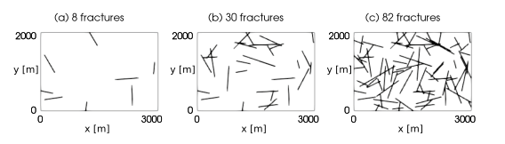
Results (2D): spatial fields
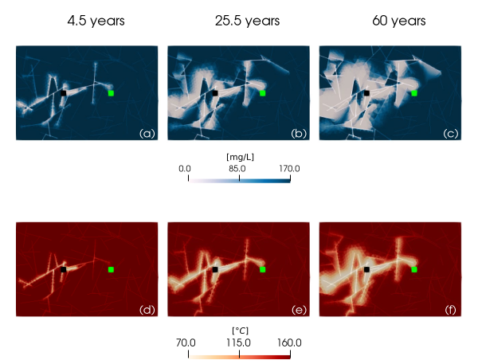
R1: pathways steer flow away from the producer → delayed breakthrough.
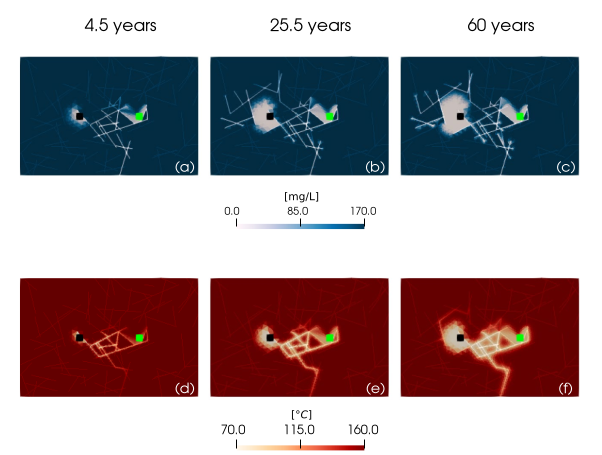
R2: connected path between wells → early short‑circuiting.
Results (2D): production curves
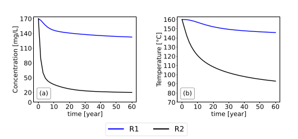
chemical breakthrough (Li) occurs earlier than thermal breakthrough, and fracture geometry can drastically accelerate Li decline.
Cumulative production metrics
\[
W_c = \int_0^{60} c\,q\,dt, \qquad
W_T = \int_0^{60} T\,\rho_f b_f\,q\,dt
\]
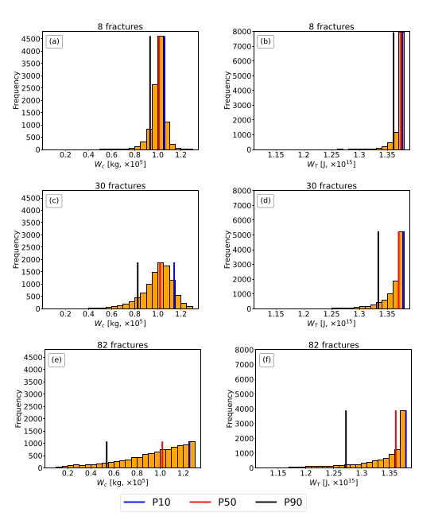
Monte Carlo: 2D model validation
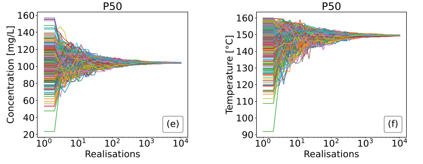
P50 stabilizes after 300 reshuffles, indicating robust central tendency.
3D fracture networks — connectivity test
- Inspired by Soultz-sous-Forêts style networks.
- Domain: \(\Omega=[-4,2]\times[-3,3]\times[0,8]\) km
- N1: 39 fractures, not connected between wells.
- N2: add one fracture to connect components → short-circuit pathway possible.
- IC/Injection same as 2D.
- \(q=30\ \mathrm{L/s}\), \(\Delta t=1\) year, boundary \(p=30\ \mathrm{MPa}\).
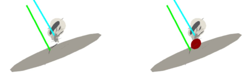
Results (3D): connectivity effect
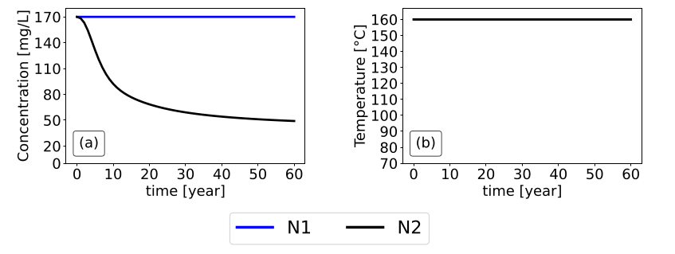
Conclusions
Key takeaways
- Lithium is highly sensitive to fracture connectivity; energy production is more robust due to diffusion.
- Mixed-dimensional modeling represents fractures without 3D meshing, keeping costs stable and physics accurate.
- The FV + upwind + implicit workflow is robust for advection-dominated transport and scales to Monte Carlo uncertainty.